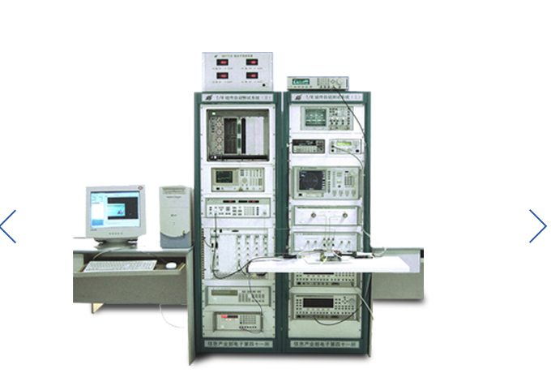
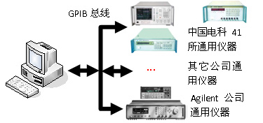
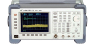
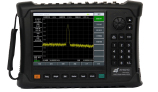
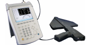

| 登录 | 注册
language∨
中文
电话：800-8687-041
首页
产品中心
技术支持
计量和服务
新闻中心
访问论坛
关于我们
主页>解决方案>通用共性解决方案>
T/R组件通用测试平台
T/R组件通用平台

适用于各类仪器的测试
T/R组件通用测试平台是基于通用，开放式的软/硬件平台，集成了T/R组件测试共性。整个平台采用标准工业总线为系统控制总线，同时支持GPIB、LAN、VXI、PXI和LXI等总线的台式和模块化仪器，专用接口设备实现被测T/R组件与硬件测试平台的连接，所有硬件设备全部集成在两个标准的1.6米机柜中；系统软件是基于通用软件平台TestCen-ter的开发的用于T/R组件测试的实用化程序，包括系统搭建、测试程序生成、系统校准、测试程序运行和后级数据处理五大功能，针对其体北测T/R组件，应用该平台组件的测试系统，只需对背测T/R组件进行一次连接，就能够完成其发射状态和接收状态几乎所有参数。
功能特点
支持不同厂家多种型号标准接口台式仪器
支持标准总线模块化仪器
具有自动测量功能
具有测试程序开发、测试、运行和管理功能
具有测试结果分析、存取、显示和报表输出功能
具有波形参数测试功能
具有频谱参数测试功能
具有网络参数测试功能
支持不同厂家不同公司多种型号标准接口台式仪器
该平台可通过GPIB总线对中国电科41所、Aglient公司及其他公司的通用测试仪器进行控制，实现测试功能。

典型应用
电子系统性能综合评估：作为多用途多功能的通用信号及频谱分析仪表，AV4051可广泛用于雷达、通信等电子系统综合性能评估中，为宽带信号的测试提供高灵敏度、大动态范围、高精度、高效率的解决方案。
发射机和接收机测试和诊断：应用AV4051提供的频道分析、谱功率测试、瞬态分析、相噪测试等丰富的功能，为发射机和接收机测试提供全面得诊断服务。
直接用于复杂测试诊断系统的集成，为系统提供信号输出、数据输出和结果分析。
相关产品

AV4033高性能频谱分析仪
查看详情

AV82407毫米波扩频模块
查看详情

AV3942A便携式场强测试仪
查看详情
800-8687-041
中电仪器技术论坛
其他链接：
关于中仪电器
新闻中心
公司简介
工作机会
采购指南
如何购买
索取报价
查看特价优惠
代理合作
技术支持
查找手册
更新固化软件/软件
访问论坛
练习我们
计量和服务
计量校准
仪器维修
培训与教育
公司链接
中电科第41所
中电科第40所
依爱消防
依爱通信
兴仪电子
青岛： 地址：山东省青岛市黄岛区香江路98号
邮箱：eiqd@ei41.com
蚌埠： 地址：安徽省蚌埠市华光大道726号
邮箱：eiqd@ei41.com
www.cetcei.com; 中电科仪器仪表有限公司
《中华人民共和国电信与信息服务业务经营许可证》 编号：皖ICP备05003230
法律说明 | 网站地图